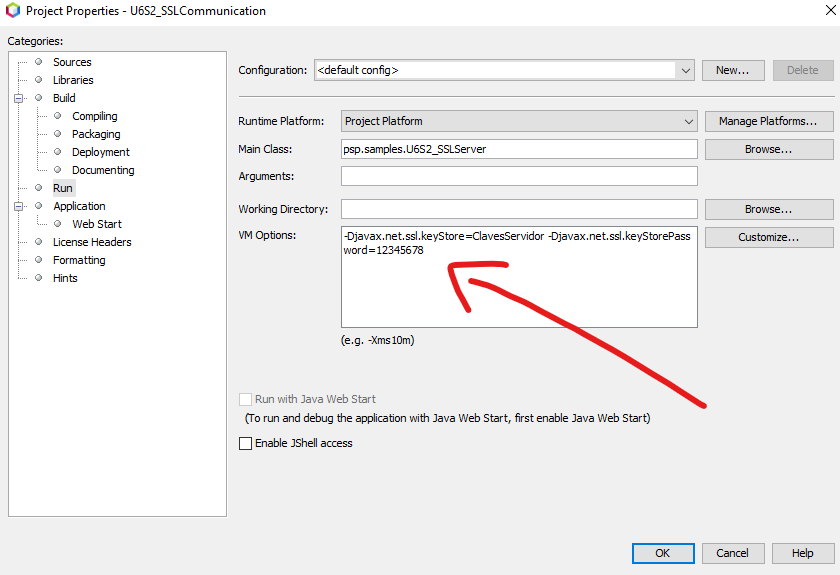

SSL es el protocolo habitualmente usado para encriptar la comunicación cliente-servidor. Casi todo el tráfico de la red puede encriptarse con SSL: POP, IMAP, telnet, FTP, etc, pero es especialmente interesante para dotar de seguridad al protocolo HTTP, es decir como base del HTTPS.
La implementación de SSL es una extensión de los sockets que permite establecer un canal (stream) de comunicación. Dicha comunicación se inicia con un handshake durante el cual, el cliente y el servidor construyen una session-key (clave simétrica encriptada con par de claves asimétricas) compartida para verificar su identidad mutua.
JSSE (Java Secure Socket Extension) es un conjunto de paquetes que permiten el desarrollo de aplicaciones seguras en Internet. Proporciona un marco y una implementación para Java de los protocolos SSL y TSL e incluye funcionalidad de
Con JSSE, los programadores pueden ofrecer intercambio seguro de datos entre un cliente y un servidor que ejecuta un protocolo de aplicación, tales como HTTP, Telnet o FTP, a través de TCP/IP.
Las clases de JSSE se encuentran en los paquetes javax.net y javax.net.ssl.
Las clases SSLSocket y SSLServerSocket representan sockets seguros y son derivadas de las ya conocidas Socket y ServerSocket respectivamente.
JSSE tiene dos clases SSLServerSocketFactory y SSLSocketFactory para la creación de sockets seguros. No tienen constructor, se obtienen a través del método estático getDefault().
Para obtener un socket servidor seguro o SSLServerSocket:
SSLServerSocketFactory sfact = (SSLServerSocketFactory) SSLServerSocketFactory.getDefault();
SSLServerSocket servidorSSL = (SSLServerSocket) = sfact.createServerSocket(puerto);
El método createServerSocket(int puerto) devuelve un socket de servidor enlazado al puerto especificado.
Para crear un SSLSocket:
SSLSocketFactory sfact = (SSLSocketFactory) SSLSocketFactory.getDefault();
SSLSocket Cliente = (SSLSocket) sfact.createSocket(Host, puerto);
El método createSocket (String host, int puerto) crea un socket y lo conecta con el host y el puerto especificados.
Cuando dos socket SSL, uno cliente y otro servidor, intentan establecer conexión, tienen que "presentarse" el uno al otro y comprobar que el otro es de confianza. Si todo va bien y uno confía en el otro, la conexión se establece, en caso contrario, no se establece.
Para establecer esa confianza se debe crear un certificado en el servidor y añadirlo a los certificados de confianza del cliente.
Seguridad mutua
Aunque no suele hacerse también podría hacerse a la inversa y obligar al cliente a tener un certificado que el servidor pudiera importar, lo que aumentaría la seguridad.
Vamos a ver cómo realizar estas operaciones previas con la herramienta keytool
Primero las acciones a realizar en el servidor
# El servidor genera una pareja de claves que se almacena en un
# fichero llamado "clavesservidor". Dentro del fichero se indica
# un alias para poder referirnos a esa clave fácilmente
# keytool -genkey -keyalg RSA -alias servidor -keystore ClavesServidor -storepass 12345678
"C:/Program Files/Java/jdk-11.0.11/bin/keytool.exe" -genkey -keyalg RSA -alias servidor -keystore ClavesServidor -storepass 12345678
What is your first and last name?
[Unknown]: Vicente Martinez
What is the name of your organizational unit?
[Unknown]: Dpto. Informatica
What is the name of your organization?
[Unknown]: IES Doctor Balmis
What is the name of your City or Locality?
[Unknown]: Alicante
What is the name of your State or Province?
[Unknown]: Alicante
What is the two-letter country code for this unit?
[Unknown]: ES
Is CN=Vicente Martinez, OU=Dpto. Informatica, O=IES Doctor Balmis, L=Alicante, ST=Alicante, C=ES correct?
[no]: yes
# El servidor genera su "certificado", es decir un fichero que
# de alguna forma indica quien es él. El certificado se almacena
# en un fichero llamado clavesservidor y a partir de él queremos
# generar el certificado de un alias creado previamente con nombre servidor
# keytool -exportcert -alias servidor -file servidor.cer -keystore ClavesServidor
"C:/Program Files/Java/jdk-11.0.11/bin/keytool.exe" -exportcert -alias servidor -file servidor.cer -keystore ClavesServidor
Enter keystore password:
Certificate stored in file <servidor.cer>
En la carpeta donde hemos ejecutado el comando keytool, se ha creado el almacén de claves en un fichero llamado ClavesServidor y el certificado exportado en el archivo servidor.cer
y a continuación las que habría que realizar en el cliente para generar el almacén de confianza que, en nuestro caso contenga el mismo certificado que hemos exportado del servidor.
# Se importa el certificado del servidor indicando que pertenece a
# la lista de certificados confiables.
# keytool -importcert -trustcacerts -alias servidor -file servidor.cer -keystore clavescliente -storepass 87654321
"C:/Program Files/Java/jdk-11.0.11/bin/keytool.exe" -importcert -trustcacerts -alias servidor -file servidor.cer -keystore CertificadosConfianzaCliente -storepass 87654321
Owner: CN=Vicente Martinez, OU=Dpto. Informatica, O=IES Doctor Balmis, L=Alicante, ST=Alicante, C=ES
Issuer: CN=Vicente Martinez, OU=Dpto. Informatica, O=IES Doctor Balmis, L=Alicante, ST=Alicante, C=ES
Serial number: 4eb6f2a5
Valid from: Mon Jan 24 00:20:24 CET 2022 until: Sun Apr 24 01:20:24 CEST 2022
Certificate fingerprints:
SHA1: DD:A2:75:4C:1C:BC:39:60:BE:B1:20:67:E1:5C:45:8C:48:B5:1F:54
SHA256: 82:C8:56:C2:DB:DE:8C:73:A9:21:C6:7D:DE:1F:39:4F:79:CC:5F:D5:10:BC:61:DA:E3:EE:E1:1D:21:EA:D2:33
Signature algorithm name: SHA256withRSA
Subject Public Key Algorithm: 2048-bit RSA key
Version: 3
Extensions:
#1: ObjectId: 2.5.29.14 Criticality=false
SubjectKeyIdentifier [
KeyIdentifier [
0000: 16 AE 35 7C 58 97 B1 95 91 9B FA 6C 2A 80 D2 90 ..5.X......l*...
0010: 1C 50 7F C0 .P..
]
]
Trust this certificate? [no]: yes
Certificate was added to keystore
En esta ocasión también se crea, en la carpeta donde se ha ejecutado el comando keytool, un fichero CertificadosConfianzaCliente con el/los certificados de confianza para el cliente.
En le siguiente ejemplo podemos observar como la inicialización del ServerSocket es diferente, pero a partir de que se llama al método accept y, en este caso se obtiene una instancia de tipo SSLSocket, el resto del código es igual que con la clase Socket.
public class U6S5_SSLServer { public static void main(String[] arg) throws IOException { SSLSocket clienteConectado = null; DataInputStream flujoEntrada = null; //FLUJO DE ENTRADA DE CLIENTE DataOutputStream flujoSalida = null; //FLUJO DE SALIDA AL CLIENTE // Las propiedades se pueden especificar mediante código, o bien mediante // argumentos de la JVM en la llamada a la aplicación // System.setProperty("javax.net.ssl.keyStore", System.getProperty("user.dir") + "\\ClavesServidor"); // System.setProperty("javax.net.ssl.keyStorePassword", "12345678"); // Inicialización del ServerSocket SSL int puerto = 6000; SSLServerSocketFactory sfact = (SSLServerSocketFactory) SSLServerSocketFactory.getDefault(); SSLServerSocket servidorSSL = (SSLServerSocket) sfact.createServerSocket(puerto); for (int i = 1; i < 5; i++) { System.out.println("Esperando al cliente " + i); // Se espera la conexión de un cliente con accept clienteConectado = (SSLSocket) servidorSSL.accept(); // Trabajamos do DataInputStream y DataOutputStream para simplificar // el código del ejemplo flujoEntrada = new DataInputStream(clienteConectado.getInputStream()); flujoSalida = new DataOutputStream(clienteConectado.getOutputStream()); // El cliente envía un mensaje System.out.println("Recibiendo del CLIENTE: " + i + " \n\t" + flujoEntrada.readUTF()); // El Servidor responde con un saludo flujoSalida.writeUTF("Saludos al cliente del servidor"); } // CERRAR STREAMS Y SOCKETS flujoEntrada.close(); flujoSalida.close(); clienteConectado.close(); servidorSSL.close(); } }
En el cliente el proceso es el mismo, tras la llamada al método createSocket, obtenemos una instancia de SSLSocket que utilizamos igual que si fuese un Socket.
public class U6S5_SSLClient { public static void main(String[] arg) throws IOException { SSLSocket clienteSSL = null; DataInputStream flujoEntrada = null; //FLUJO DE ENTRADA DE CLIENTE DataOutputStream flujoSalida = null; //FLUJO DE SALIDA AL CLIENTE // Las propiedades se pueden especificar mediante código, o bien mediante // argumentos de la JVM en la llamada a la aplicación // System.setProperty("javax.net.ssl.trustStore", System.getProperty("user.dir") + "/CertificadosConfianzaCliente"); System.setProperty("javax.net.ssl.trustStore", "CertificadosConfianzaCliente"); System.setProperty("javax.net.ssl.trustStorePassword", "87654321"); // Inicialización del ServerSocket SSL int puerto = 6000; String host = "localhost"; System.out.println("Programa Cliente iniciado...."); SSLSocketFactory sfact = (SSLSocketFactory) SSLSocketFactory.getDefault(); clienteSSL = (SSLSocket) sfact.createSocket(host, puerto); // Trabajamos do DataInputStream y DataOutputStream para simplificar // el código del ejemplo flujoSalida = new DataOutputStream(clienteSSL.getOutputStream()); flujoEntrada = new DataInputStream(clienteSSL.getInputStream()); // Envío un saludo al servidor flujoSalida.writeUTF("Saludos al SERVIDOR DESDE EL CLIENTE"); // El Servidor responde con un mensaje System.out.println("Recibiendo del SERVIDOR: \n\t" + flujoEntrada.readUTF()); // CERRAR STREAMS Y SOCKETS flujoEntrada.close(); flujoSalida.close(); clienteSSL.close(); } void mostrarInformacionSesionSSL(SSLSocket cliente) throws SSLPeerUnverifiedException { //------------------------------------------------------------------------------ //Ejemplo de la múltiple información sobre la sesión SSL // que se puede obtener a partir SSLSession session = ((SSLSocket) cliente).getSession(); System.out.println("Host: " + session.getPeerHost()); System.out.println("Cifrado: " + session.getCipherSuite()); System.out.println("Protocolo: " + session.getProtocol()); System.out.println("IDentificador:" + new BigInteger(session.getId())); System.out.println("Creación de la sesión: " + session.getCreationTime()); X509Certificate certificate = (X509Certificate) session.getPeerCertificates()[0]; System.out.println("Propietario: " + certificate.getSubjectDN()); System.out.println("Algoritmo: " + certificate.getSigAlgName()); System.out.println("Tipo: " + certificate.getType()); System.out.println("Emisor: " + certificate.getIssuerDN()); System.out.println("Número Serie: " + certificate.getSerialNumber()); //----------------------------------------------------------------------------- } }
Si ejecutamos el cliente y el servidor directamente, obtendremos el siguiente error
Programa Cliente iniciado....
Exception in thread "main" javax.net.ssl.SSLHandshakeException: Received fatal alert: handshake_failure
Para ejecutar el programa servidor es necesario indicar el certificado que se utilizará.
Lo podemos indicar a la hora de ejecutar el programa, añadiendo a la línea de comandos
java -Djavax.net.ssl.keyStore=ClavesServidor -Djavax.net.ssl.keyStorePassword=12345678
y en el programa cliente es necesario indicar la ubicación de los certificados de confianza
java -Djavax.net.ssl.trustStore=CertificadosConfianzaCliente -Djavax.net.ssl.trustStorePassword=87654321
o bien, en las opciones de ejecución del IDE

Parámetros de JVM o código
En el código anterior hay unas líneas comentadas que especifican cómo podemos configurar el valor de las propiedades desde código mediante el uso del método System.setProperty(String propiedad, String valor).
En el programa servidor incluiríamos las siguientes líneas:
System.setProperty("javax.net.ssl.keyStore", "ClavesServidor");
System.setProperty("javax.net.ssl.keyStorePassword", "12345678");
Y en el programa cliente serían estas:
System.setProperty("javax.net.ssl.trustStore", "CertificadosConfianzaCliente");
System.setProperty("javax.net.ssl.trustStorePassword", "87654321");
Además del nombre, podemos indicar la ruta donde se encuentran los almacenes, recordando que NO ES RECOMENDABLE el uso de barras invertidas para indicar rutas.
Una vez hechos los cambios, bien en las opciones de la JVM o bien en el código de las aplicaciones, la salida que obtendremos será esta
Esperando al cliente 1
Recibiendo del CLIENTE: 1
Saludos al SERVIDOR DESDE EL CLIENTE
Esperando al cliente 2
Recibiendo del CLIENTE: 2
Saludos al SERVIDOR DESDE EL CLIENTE
Esperando al cliente 3
Programa Cliente iniciado....
Recibiendo del SERVIDOR:
Saludos al cliente del servidor
Default trusted certificates
Whenever Java attempts to connect to another application over SSL (e.g.: HTTPS, IMAPS, LDAPS), it will only be able to connect to that application if it can trust it. The way trust is handled in the Java world is that you have a keystore (typically $JAVA_HOME/lib/security/cacerts), also known as the truststore. This contains a list of all known Certificate Authority (CA) certificates, and Java will only trust certificates that are signed by one of those CAs or public certificates that exist within that keystore.
If -Djavax.net.ssl.trustStore has been configured, it will override the location of the default truststore, which will need to be checked.